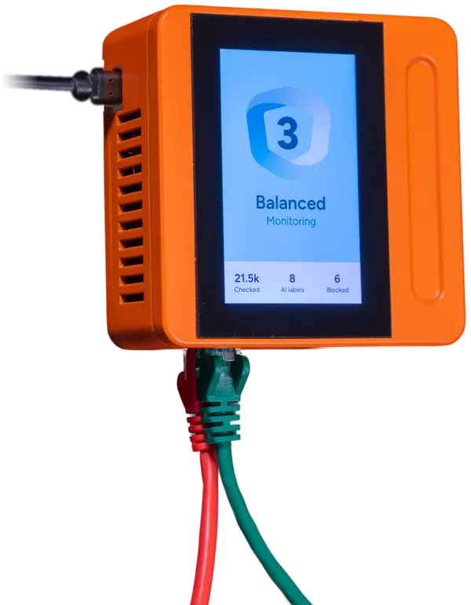

Tres bancos
Juntos establecen si un pago es sospechoso, sin que ninguno de ellos vea el expediente de cliente de otro.
Construimos el Ecosistema de Conocimiento Freehold, en el que sus datos se quedan donde están. La pregunta viaja hasta ellos, el algoritmo se ejecuta allí mismo y solo sale la respuesta.
Juntos establecen si un pago es sospechoso, sin que ninguno de ellos vea el expediente de cliente de otro.
Llegan a una respuesta sobre un tratamiento mientras los historiales de los pacientes nunca salen del hospital.
Avisa al propietario de que toca el mantenimiento sin apropiarse de los datos de producción de esa fábrica.
Una comparación recorre toda la página, la red eléctrica. Hace cien años ocurrió allí lo mismo: se tendió una línea, un enchufe se convirtió en el estándar y después miles de otras personas construyeron aparatos para él. Creemos que los datos están ahora en ese punto.
Ese mercado no existe. La razón es que los datos no tienen la propiedad que hace surgir un precio.
Lo que usted consume, otro no lo consume. Eso hace posible la escasez, eso crea un precio, y por eso existe un mercado de la electricidad.
Cada copia es tan buena como el original y casi no cuesta nada hacerla. Así que nunca surge la escasez, ni tampoco un precio.
Hacemos posible que dos partes intercambien una respuesta que deja a ambas en mejor situación. Una respuesta es el resultado de una pregunta acotada, calculada sobre datos que se quedan donde están.
Hoy sus datos viajan hacia la parte que quiere algo de ellos. Con nosotros la pregunta viaja hacia sus datos, y solo la respuesta vuelve.
Lo que sale es la energía, y la instalación se queda donde está.
Sus datos van a una parte, y esa parte puede pasarlos a otras partes que usted nunca ha visto. Después ya no los ve ni tiene nada que decir sobre lo que todavía les pase.
Por eso una respuesta nunca sale de nosotros desnuda. La rodea un sobre firmado, que registra de dónde viene y para qué puede usarse.
La red eléctrica nunca triunfó solo por la red. Triunfó porque llegó un estándar y un enchufe, después de lo cual cualquiera era libre de construir un aparato para él.

Construimos el ecosistema y un pequeño número de aplicaciones, y abrimos el ecosistema a otros que construyen en él sus propias aplicaciones.
Quien decide qué algoritmo se admite, y quien decide qué tráfico circula a precio de coste, ejerce autoridad sobre todos los demás que construyen en el mismo ecosistema. Ambas decisiones corresponden a un consejo en el que Freehold no se sienta en solitario, con condiciones publicadas y con derecho de recurso contra una denegación.
La imagen de la red eléctrica llega lejos, y no lo cubre todo. A continuación se indica dónde se detiene.
Con nosotros, lo que usted recibe a cambio es ante todo una oferta mejor.
Dos kilovatios hora son idénticos y por tanto negociables en una bolsa. Dos respuestas nunca lo son.
Un operador de red tiene un monopolio regulado. Nosotros no.
Todos están en la red eléctrica porque no hay alternativa. Para los datos esa alternativa sí existe, a saber, internet tal como funciona hoy.
En 1899 el tres por ciento de los hogares estadounidenses tenía luz eléctrica. Pasaron unas cuatro décadas desde la primera central eléctrica hasta llegar a la mitad, y en Gran Bretaña el cinco por ciento de las casas tenía instalación eléctrica en 1919.
Freehold es el nombre de lo que construimos. Un freehold es una tierra en pleno dominio, frente a la tenencia feudal, en la que uno recibe la tierra de un señor al que debe servicio y tributos.
El funcionamiento descrito en esta página es objeto de una solicitud de patente europea con el título Improved authentication for processing requests, número 26202295.7, presentada el 1 de septiembre de 2026.
Preguntas, o una conversación: hello@freehold.works